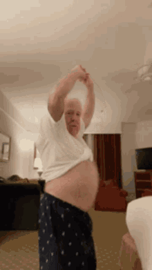
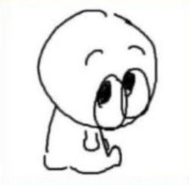
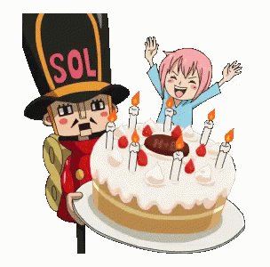

Se viene la felicitación rarita de tu amiga la menos enganchada a la tecnología, ole ole.
Gonzalo, hoy es tu día y no podía dejarlo pasar sin recordarte lo importante que eres para mí. En este último año te has convertido en alguien esencial, formas parte de mi pequeña familia elegida y eso será ya siempre así. Me siento afortunada de poder compartir contigo risas, charlas, aventuras y momentos que sé que recordaré siempre. Gracias por estar, por cuidarnos, por hacernos sentir en casa. Te mereces lo mejor hoy y siempre.
Verás, Gonzalo... Después de tantos años estudiando informática, descubrí la verdadera forma de generar riqueza: usar la inteligencia artificial para que trabaje por mí. Así que me senté, abrí una conversación con mi Chaty, y le pedí que hiciera esta página web. ¿El resultado? Una obra maestra en tu honor y diez eurazos que ahora son tuyos. De nada, mi rey. ¿Puedes notar qué partes están hechas con IA? Seguro que sí: la ortografía impecable, la coherencia del texto, el claro esfuerzo no invertido... Pero también el cariño, ese no lo genera una IA: ese es 100% mío.
Porque Gonzalo es el tipo de persona que lo da todo sin esperar nada a cambio. Siempre tiene un buen consejo de hombre sabio, un chiste de cuñado, una risa que contagia y una disponibilidad infinita para echar una mano. Es el funcionario más querido de Renfe (espero, o si no habrá que empezar a apuñalar), el mejor en el LoL (imagino, pero si lo lee Pau yo no he dicho eso) y el jugador más temido de Magic (digo yo, pero yo confío, aham). Pero, sobre todo, es nuestro amigo, nuestro apoyo y nuestra familia. Estar a su lado es garantía de sentirse querido, valorado y en confianza.
Me parecía cuqui este apartado, no quería ofender a nadie (a no seeeeerDigo no, no).
Una felicitación no podía venir sin Ney, ome no.
El main character de este anime, eh.
Mira qué porte y qué elegancia.
Le he tenido que pedir a la IA que nos saque una foto juntos. Así de desgraciados somos. Y sí, tengo un cabezón descomunal en este dibujo. Es el claro ejemplo de porqué no debemos sustituir jamás a los artistas, xd.
No hay tarta... toma esto, rey.
